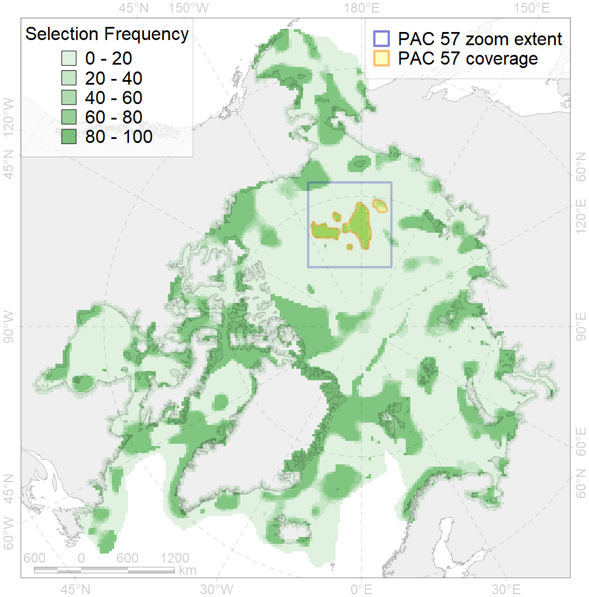
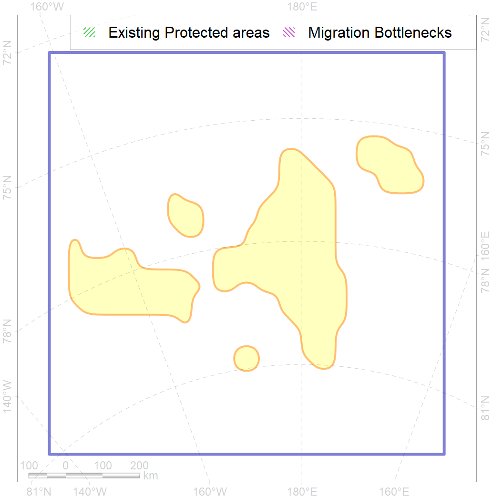

57
For more information regarding this PAC and to conduct custom spatial analysis using the PAC data or any spatial query, please consult Accenter.

1
CFs entirely within the PAC area
8
CFs at least 25% within the PAC area
4
CFs with their target entirely achieved in the PAC
11
CFs with at least 50% of their target achieved in the PAC
| CF ID | CF Name | Proportion in the PAC | Conservation Target | Contribution to ArcNet Target Achievement | PAC’s Contribution to the Achieved Target |
|---|---|---|---|---|---|
| 7203 | Benthic communities, VI.4.7. Mendeleev and Alpha ridges and plateaus region canyons | 100.0% | 100.0% | 100.0% | 100.0% |
| 7206 | Benthic communities, VI.5.3. Chukchi Plateau and Northwind Ridge region ridges | 82.0% | 90.1% | 90.9% | 90.4% |
| 7205 | Benthic communities, VI.5.2. Chukchi Plateau and Northwind Ridge region terraces | 81.9% | 80.3% | 99.1% | 98.4% |
| 7207 | Benthic communities, VI.5.7. Chukchi Plateau and Northwind Ridge region canyons | 72.4% | 72.3% | 96.1% | 95.6% |
| 7201 | Benthic communities, VI.4.2. Mendeleev and Alpha ridges and plateaus region terraces | 66.2% | 59.7% | 95.7% | 94.0% |
| 3048 | Multiyear Ice biological communities, September, Chukchi Sea | 44.4% | 18.0% | 236.0% | 92.0% |
| 7204 | Benthic communities, VI.5. Chukchi Plateau and Northwind Ridge VI.5.1. Plateaus | 28.8% | 30.4% | 89.8% | 88.8% |
| 7200 | Benthic communities, VI.4. Mendeleev and Alpha ridges and VI.4.1. plateaus | 27.7% | 50.0% | 50.7% | 50.6% |
| 7083 | Benthic communities, I.2.2.1. Chukchi Sea slope | 22.7% | 15.0% | 129.3% | 77.2% |
| 7018 | Benthic communities, Amerasian bathyal Zoogeographic region | 19.3% | 8.4% | 211.0% | 80.7% |
| 7202 | Benthic communities, VI.4.3. Mendeleev and Alpha ridges and plateaus region ridges | 15.2% | 100.0% | 15.2% | 15.2% |
| 3058 | Multiyear Ice biological communities, September, East-Siberian Sea | 10.1% | 18.0% | 19.9% | 19.7% |
| 3031 | MIZ biological communities, July, Central Arctic Ocean | 10.0% | 24.0% | 37.4% | 37.2% |
| 7183 | Benthic communities, VII.3.5. Makarov and Canada basin deep parts of canyons (below slope) | 8.6% | 23.1% | 35.6% | 25.5% |
| 2061 | Ringed seal (Phoca hispida) feeding grounds, as predicted by MIZ distribution | 7.7% | 24.0% | 26.4% | 13.9% |
| 9001 | Polar bear (Ursus maritimus), Arctic Basin subpopulation, home range | 7.5% | 26.4% | 15.2% | 15.1% |
| 7082 | Benthic communities, I.2.1.6. Chukchi Sea outer shelf with medium to high profile | 6.1% | 8.7% | 23.3% | 13.4% |
| 7182 | Benthic communities, VII.3.4. Makarov and Canada basin abyssal mountains | 5.7% | 16.6% | 33.6% | 26.0% |
| 4090 | Fish communities, Euro-Asian Bathyal Zoogeographic District, Subarctic Transitional-Atlantic Province, Arctic Region | 4.4% | 15.9% | 22.8% | 12.7% |
| 7106 | Benthic communities, II.1.1.15. East-Siberian Sea outer shelf | 3.9% | 9.1% | 19.4% | 16.8% |
| 7037 | Benthic communities, Transitional Zoogeographic zone, Amerasian shelf | 3.6% | 10.6% | 12.4% | 7.5% |
| 3049 | Multiyear Ice biological communities, September, Central Arctic Ocean | 3.1% | 18.0% | 15.8% | 15.7% |
| 4096 | Glacial eelpout (Lycodes frigidus) home range | 2.9% | 6.0% | 45.4% | 11.6% |
| 4079 | Fish communities, Scandian, Central-Arctic and Baffin Deep Sea Zoogeographic Districts, Arctic Abyssal Province, Arctic Region | 2.8% | 4.0% | 64.8% | 11.1% |
| 7181 | Benthic communities, VII.3.3. Makarov and Canada basin abyssal hills | 1.7% | 7.2% | 20.3% | 9.8% |
| 3030 | MIZ biological communities, July, Chukchi Sea | 1.6% | 24.0% | 6.0% | 5.1% |
| 7023 | Banthic communities, Canada Basin abyssal Zoogeographic region | 1.1% | 7.9% | 13.9% | 13.5% |